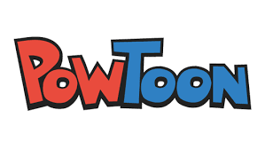
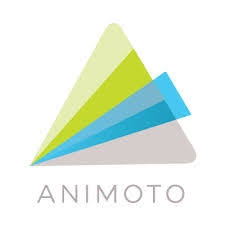
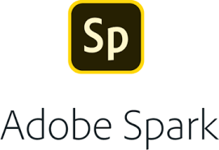

Es importante evaluar las características que debe contener el material para determinar el software específico a utilizar. Te mostramos una lista y un carrusel de ejemplos de Herramientas en la WEB para crear vídeos, según requieras presentar la información.
Powtoon

Es un programa para crear vídeos y presentaciones animadas e interpretar lo que el usuario introduce en su interfaz. Reproduce una especie de caricatura de una persona hablando por medio de cuadros de diálogo que el usuario haya escrito.
Puedes hacer presentaciones de una forma sencilla. La versión gratuita permite realizar presentaciones de una duración inferior a cinco minutos. Se recomienda que el vídeo o presentación dure entre un minuto y medio a dos minutos.
La herramienta se puede encontrar en https://www.powtoon.com/ y podrás ver un pequeño tutorial de uso en:
Animoto
 .
Es una herramienta web que se utiliza para crear y editar vídeos animados a partir de fotos y música de una manera sencilla y práctica, permitiendo generar un producto profesional, aunque no tengas ningún tipo de conocimiento de edición. Tiene una gran ventaja que es el poder usar clips de vídeo para dar más dinamismo.
Se puede utilizar online desde el ordenador o descargándola como aplicación móvil en sistemas iOS y Android. El vídeo se puede guardar y exportar en formatos mp4, compartir en YouTube, redes sociales o mediante un link.
Presenta un software gratuito online que permite crear vídeos de hasta 30 segundos con fotografías seleccionadas y con múltiples arreglos como la adición de textos y música. Sin embargo, establece en el vídeo el rótulo TRIAL.
Si desean que no se visualice ese rótulo, presenta la opción de suscripción de pago utilizada para el ámbito profesional o ejecutivo. Ésta cuenta con más elementos de edición y provee tutoriales para que puedas aprovechar al máximo todas las herramientas. Se puede encontrar en el siguiente link: https://animoto.com/ y podrás ver una guía de cómo utilizar esta herramienta en: https://www.youtube.com/watch?v=lKTy7JfsQVk
Loom
Es una herramienta sencilla para la grabación de vídeos. Podrás grabar con tu cámara utilizando micrófono al tiempo que graba también tu escritorio o una pestaña de tu navegador, es un software gratuito y tiene opción de pago para brindar más características. Para poder utilizar Loom debes crear una cuenta (Sign Up) utilizando Google o correo electrónico, sin necesidad de conocimientos previos.
Instalar la aplicación es muy sencillo, solo tienes que ir https://www.loom.com/ y descargar para tu ordenador o la extensión para el navegador Google Chrome.
El siguiente vídeo les mostrará cómo puede utilizarse esta herramienta:
Spark

Es una herramienta que permite crear fácilmente logotipos, páginas web y vídeos cortos. Dispone de plantillas de calidad y Adobe Fonts, entre otros productos. Incluso puedes añadir tu marca para que cualquier cosa que crees sea exclusivamente tuya. Es un software que se puede usar online o descargarla como aplicaciones móviles para iOS y Andriod, guarda y exporta en formatos .mp4, .mov, .m4v.
Puedes obtenerla en https://spark.adobe.com. Adobe spark es una combinación de diferentes apps de adobe como photoshop, adobe video y adobe voice, todas juntas en una plataforma de uso fácil para docentes y estudiantes, excelente para crear y compartir historias visuales de una manera sencilla.
En el siguiente link podrás ver una demostración de adobe Spark: https://www.youtube.com/watch?v=Qmx47pzwddI
...
- Google Search Video Creator permite generar historias en forma de vídeos cortos a partir de búsquedas en Google y compartir el resultado en Youtube. Funciona escribiendo 7 términos de búsqueda, eligiendo para cada uno el tipo de resultados que mejor ayudarán a transmitir la historia (imágenes, mapas, noticias, blogs, libros, etc.) y seleccionando una banda sonora. Para utilizar esta herramienta es necesario tener una cuenta en youtube.
- Debut Screen and Video Recorder Free. Para capturar y guardar información de la pantalla de la computadora o por medio de webcam. Permite seleccionar opción completa o una sección.
- Video Editor & Music Movie Marker. Edición de vídeo con interfaz de línea de tiempo, fácil de usar. Es gratis, sin marca de agua.
- Prezi vídeo. Herramienta para crear y compartir vídeos. Explora ideas basado en la nube. Tiene una opción básica gratuita.
Les muestro ejemplos de material sencillo creado por medio de ANIMOTO y POWTOON, herramientas que permiten convertir ideas en material, de forma rápida y fácil.
...